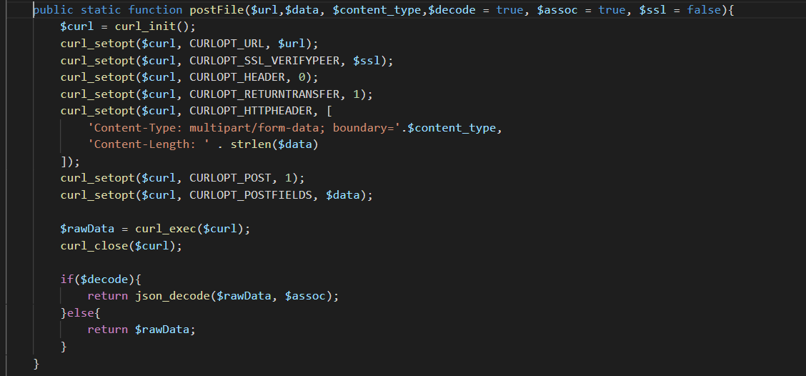

最近一个项目需要在钉钉中导出excel。钉钉的文件导出都是工作通知的形式导出。工作通知只能附带媒体文件(media，钉钉自定义的说法)，所以采取的策略是先在服务端生成要导出的excel文件，在通过钉钉上传媒体文件接口生成媒体文件，然后通过钉钉的工作通知下发给用户。中间被上传媒体文件接口卡了半天，记录一下，也希望能帮助到遇到相同问题的同行。最后吐槽下钉钉的文档写的是真的简略。
回到正题，首先来看钉钉的文档。
对数据格式和文件名称都有要求。这个media参数是重点。
最开始的时候是直接用的php的curl做post请求，代码如下，其中'Content-Type: application/json; charset=utf-8'设置为了multipart/form-data;，$data就是上面的media,但是钉钉的接口返回提示是参数类型不符合要求。
这就让人纳闷了。在网上查询了下，貌似钉钉的意思是要手动拼接form-data数据，然后传给他。在网上看了下各种写法，奈何本人愚钝不堪，难以理解。最后下载了钉钉的php-sdk，下载下来一看，emmm，能把taobao删掉吗，我尴尬症都烦了。翻了下sdk的源码，找到上传文件的地方，研究了下，根据sdk的源码稍微微调了下，最后成功把文件上传到钉钉了。
下面这张图里面的$delimiter变量是分割符，$file是文件，需要用file_get_contents读取，至于为啥，可以翻下php手册的curl，我记得php以前是在上传文件路径前加@，现在是专门有个辅助函数解析，至于函数是啥忘了(囧),感兴趣的话可以查查php手册，至于我这为啥用file_get_contents，emmmm,sdk是这样写的，我不做代码的生产者，只是搬运工。
从上面的图可以看到是有个专门的函数拼接数据的，这就是这次的重点。放下面
sdk里面是写了多参数的循环处理，我这只用上传图片就给简化了，只写了一个文件上传，现在可以看到，为啥钉钉会说你参数类型不对了，因为人家根本就不读你的header头。name=media ，filename就是你要上传的文件。
拼接完后按照正常的curl发出个post请求，搞定。
文件上传的post请求也贴下，还是给设置了header头。

最后还是要吐槽下，这个说明文档真的是呵呵了。能像人家阿里云学习下吗，现在阿里云都支持输入参数自动帮你生成api代码了。那叫一个酸爽。